|
|
RepairsLab User Guide |
Issue Date: Page |
RepairsLab
User Guide
For RepairsLab 1.0
Author : Fabrizio Ferraiuolo
Table of Contents
Introduction 2
Installazione 2
Schermata principale 3
Configurazione 4
Configurazioni Base Dati 5
Gestione Anagrafiche 6
Inserimento scheda di riparazione 7
Visualizzazione scheda di riparazione 10
Modifica scheda di riparazione 10
Stampa scheda di riparazione 11
Lista Schede 13
Cestino Schede Cancellate 14
Backup dei dati 15
The following guide is the basis for configuring and using the system RepeairsLab.
The system RepeairsLab allow to manage the entry and exit of equipment repair in a small workshop for repairs or service center.
The application allows the printing of a "Repairs ticket" for each device and manage the state of repair. Inside the Repairs ticket, you can enter the features of the delivered and the state of repair.
The system provides management of different master data for definition of states of repair, customers, types of equipment, trademarks and models.
You can print a paper "Repairs ticket" in duplicate to store paper and as a delivery receipt for the customer.
The application does not need a particular procedure, because just to download from the following address
http://sourceforge.net/projects/repairslab/
and go in the download section and download the latest version binary.
The downloaded file is a zip archive, extract it and start the application on MS Windows systems running file "start.bat" while on Linux systems "start.sh."
Prerequisite use of the system is the installation of JAVA 1.5 or higher version as the default Java virtual machine.
To check your version of Java open a command prompt or Shell and run the command java -version, as in the following image.
Access to the system displays the following screen with the menu to access the database system configuration and within the main menu has the following functions:
Accessing to the list of repair sheet
Insert a new repair sheet
Browsing repair sheet (the system asks you to enter the sheet number to be displayed)
Edit repair sheet (the system asks you to enter the sheet number to be displayed)
Print repair sheet (the system asks you to enter the sheet number to be displayed)
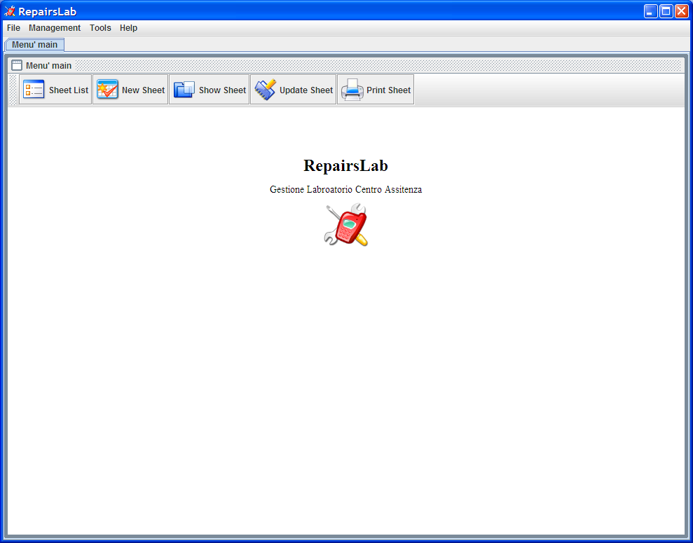
For the responsibilities set out in paragraphs 3, 4 and 5 is the first to access the specific function displays the following screen, where you must enter a valid number of repair sheet
Configuration options can be accessed from the tools menu item options, where you see the following screen :

List of configurations:
Logo: is the logo of his company, you need to edit press the select button and select a file type JPEG, GIF or PNG. The logo appears in print sheet repair .
Information on the score sheet maintenance have additional information displayed in the press sheet repair .
Info addresses and phone card printed information of your company in the press sheet repair .
Do not print in Double Copy: If you check this enabled the system will print a single copy of the repair sheet.
Look and Feel: change the look and feel of the application, you must reboot the application.
Screen configurations (above) on advanced options menu you access the following screen:
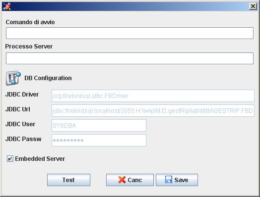
You can configure the system in two ways which are as follows
Embedded Server
Standard Server
The system is set to default embedded, this configuration provides for the use by one user, there is no access contemporary configuration includes a server instead of using contemporary times.
For the standard configuration of the server must be installed on a server FirebirdSql Database software and configure the field Url JDBC connection with the file fdb inside the installation directory db\ fdb\GESTRIP.FBD.
You can also use other databases such as Oracle or MySQL running the script db\er\ modelGestRip.sql and configure the appropriate JDBC parameters.
Access to personal case from the menu and database management are:
Customers: contains a list of customers.
States: contains the possible states of card processing.
Repair Types: contains the types of repairs or for example if a repair is done with the customer or warranty or if done at or from third parties.
Purchasing Data: contains the types of data acquisition or whether through purchase or invoice.
Equipment Type: contains the types of or if it is a cellphone rather than a television.
Brands: contains a list of brands.
Models: contains a list of models.
The mode of operation of the database provides two states, or viewing mode and edit mode.
Access was in viewing mode to switch to edit mode press the edit button in edit mode you can change fields and add other items going on the last line of the table and delete from the delete button. To apply your changes, click the Save button to cancel the appropriate button cancels.
The buttons below are used to facilitate navigation between the different records.
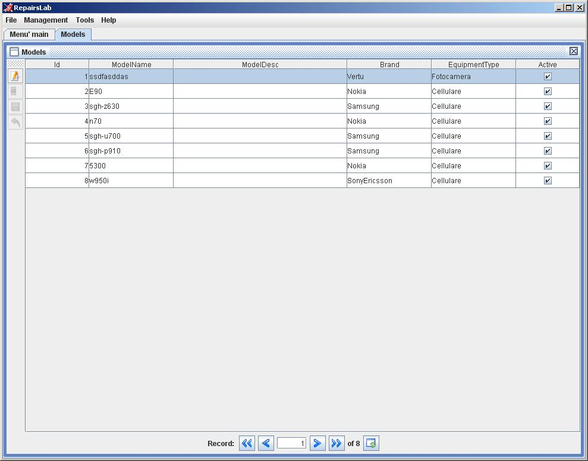
The task of entering new repair sheet is the following screen.
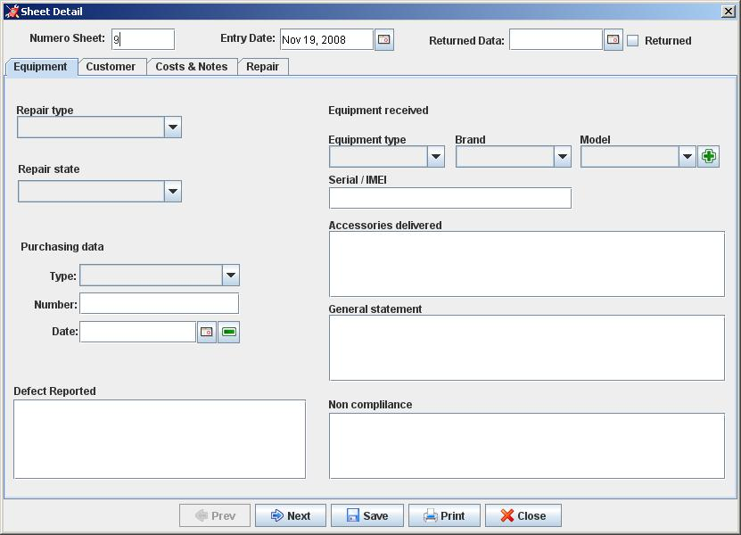
This screen shows a tab header and four each with different information. Navigation between tabs can be done by clicking on the tab at the top that with the navigation Back and Forward below.
The header has the following information:
Sheet Number. It represents a unique code that identifies the progressive card processing.
The date of entry equipment that is automatically enhanced with the current date but can be changed if you are to create a card that identifies a device delivered a few days earlier.
The date of return. Indicates the date of repayment of the customer and then enhanced indicates that if the repair is stored. To exploit this field you can simply press the returned check and the system automatically inserts the current date. This date may also be inserted manually or with the timetable accessible with the key.
Equipment tab has the following information :
Repair type. From management Type Repair.
State repair. From management States.
Purchasing data type. From management Purchasing data .
Number and purchase date. Indicate the number and date of purchase
Equipment Type. From management Equipment Type .
Brand. From management Brands .
Model. From management models. The button on the side allows the insertion of new models without direct access to management function. In placement if selected brand and/or equipment type values of this field are filtered for these values .
Descriptive fields. The following fields: Defect Reported, Serial / IMEI, accessories delivered, General statement and non-compliance are descriptive fields to define the details of the information sheet repair .
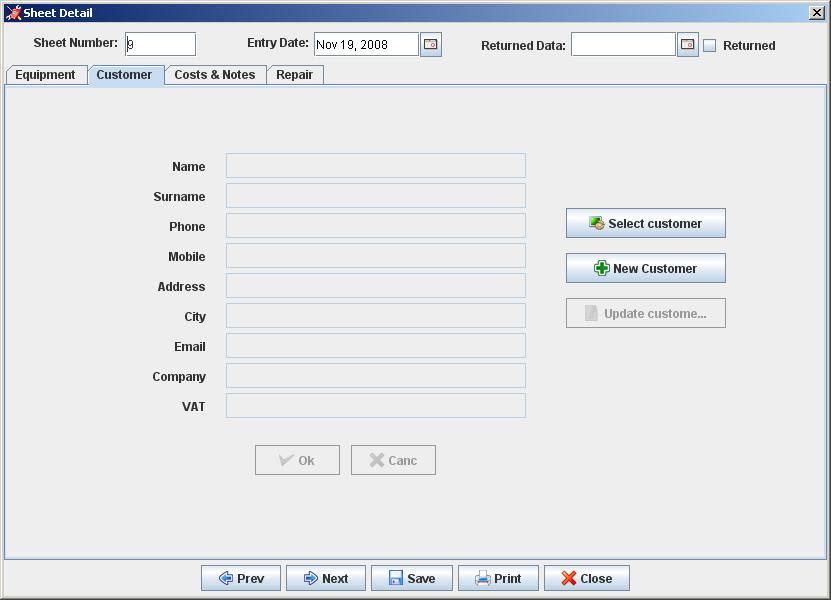
The Data tab customer information defined in the register customers is possible, by pressing the "Select Client" for your interview and select a customer. If the information relating to the customer selected are not complete or not correct you can press the button "Change Client" and make the necessary changes without direct access to manegement. If you need to insert a new customer, you can press the "Enter score" and the screen allows the insertion of a new customer .
To confirm whether amendments and insertions made it necessary to press the ok otherwise the system will record these changes
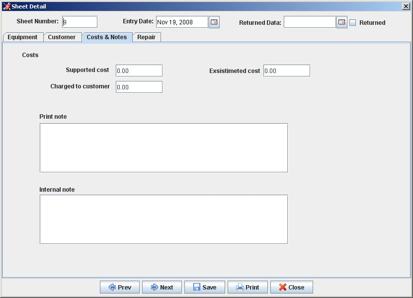
The Costs & Notes tab has the following fields:
Supported Cost. It is a value used to keep track of costs incurred for the repair, this value is not printed.
Estimated cost. Is inserted if a cost estimate.
Charged to the customer. This value is used to keep track of revenue .
Print notes. The note that details are included in the printed sheet.
Notes for internal use. This value is not printed .
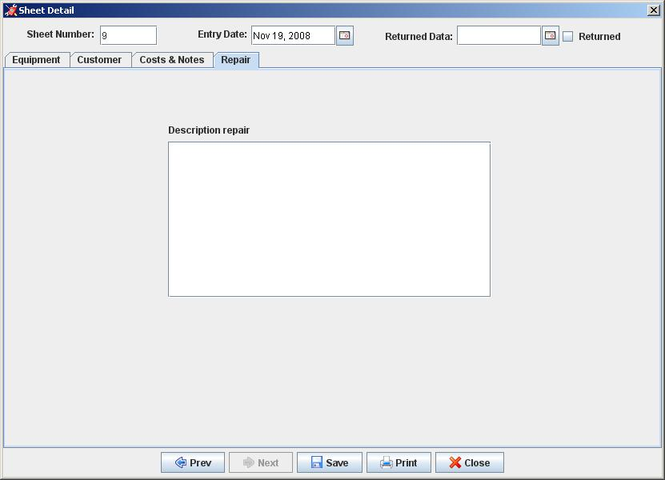
The repair tab has only one field which covers retail transactions made in the repair.
This feature allows you to interrogate data in the sheet can change without repair.
This feature allows you to change the data in the form of repair sheet.
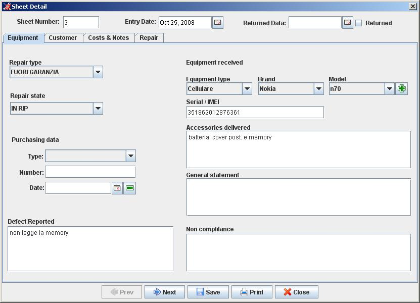
This feature
allows you to print data in the card processing.
The data are as
follows:
Are present in the logo and the data of the company, and
the number of card and the date or time to print
In section
Client are the name of the customer address the city and the phone.
In the section Device delivered: the date of entry, type device,
the make and model, the design information sheet (serial / IMEI,
accessories delivered, was generally reported defect), the type of
repair, information on the document purchase, the cost estimate.
In
the repair section are: a description of repair, notes to the print,
findings, the date of repair, the cost of repairs, information for
the customer on your maintenance.
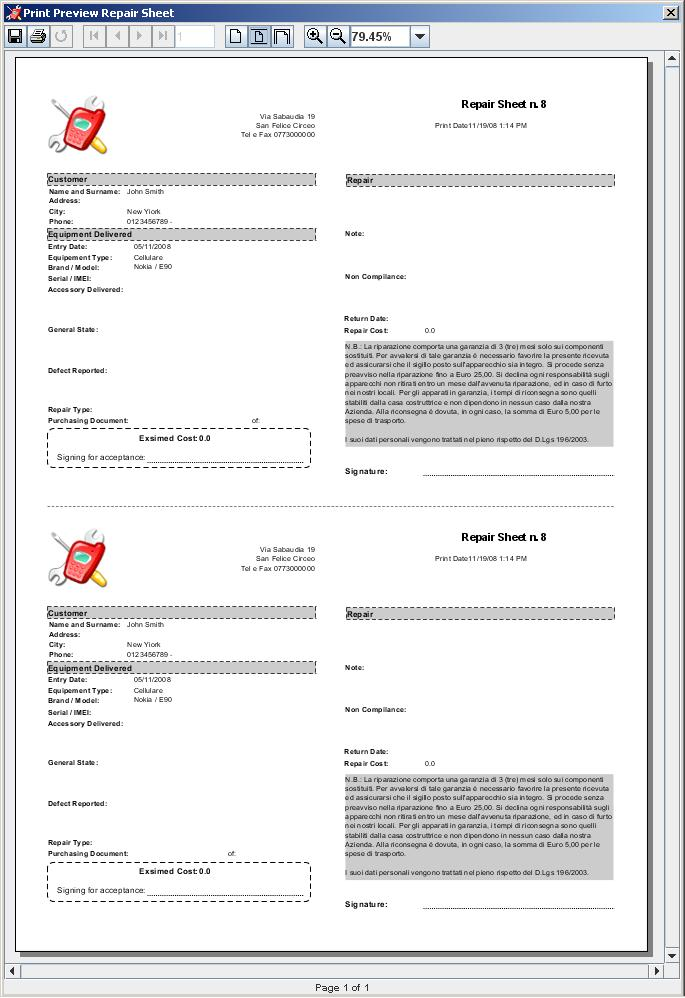
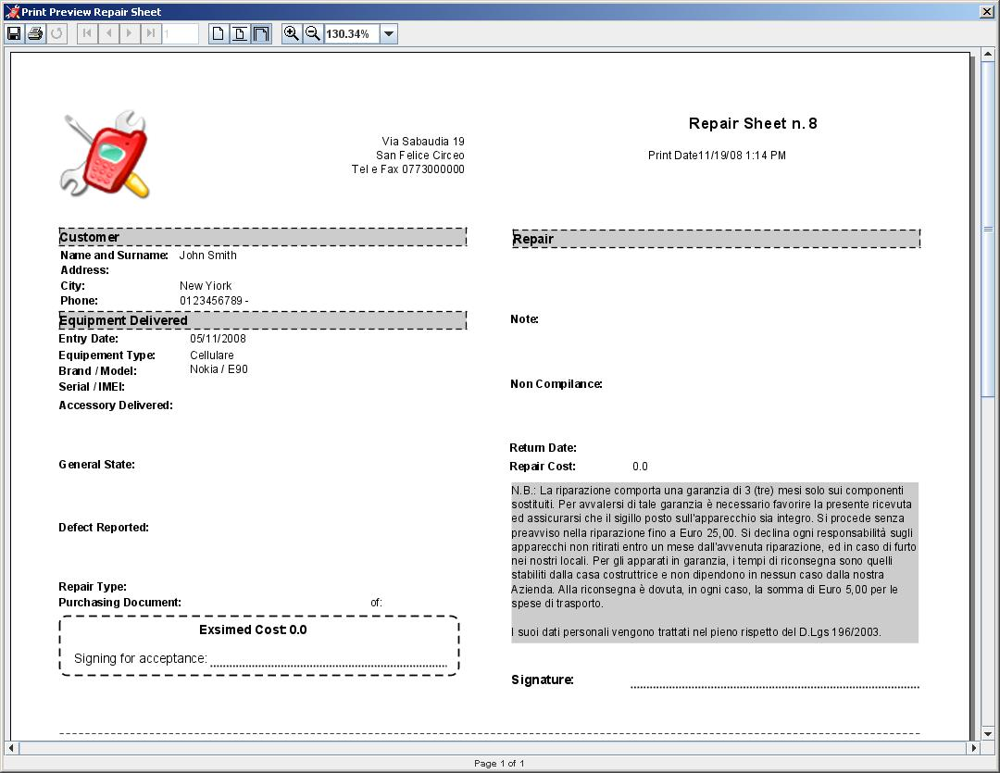
The report will have two sections one for the score one for internal use unless you select the check Do not print in duplicate.
This feature
displays a list of all repais sheet and allows the research of
different sheet according to certain criteria, from this feature,
select the tab is interested can access the Display sheet, change
sheet, insert sheet, print sheet.
It is also a feature delete
sheet that does not permanently erase data but simply moved them into
a trash cards.
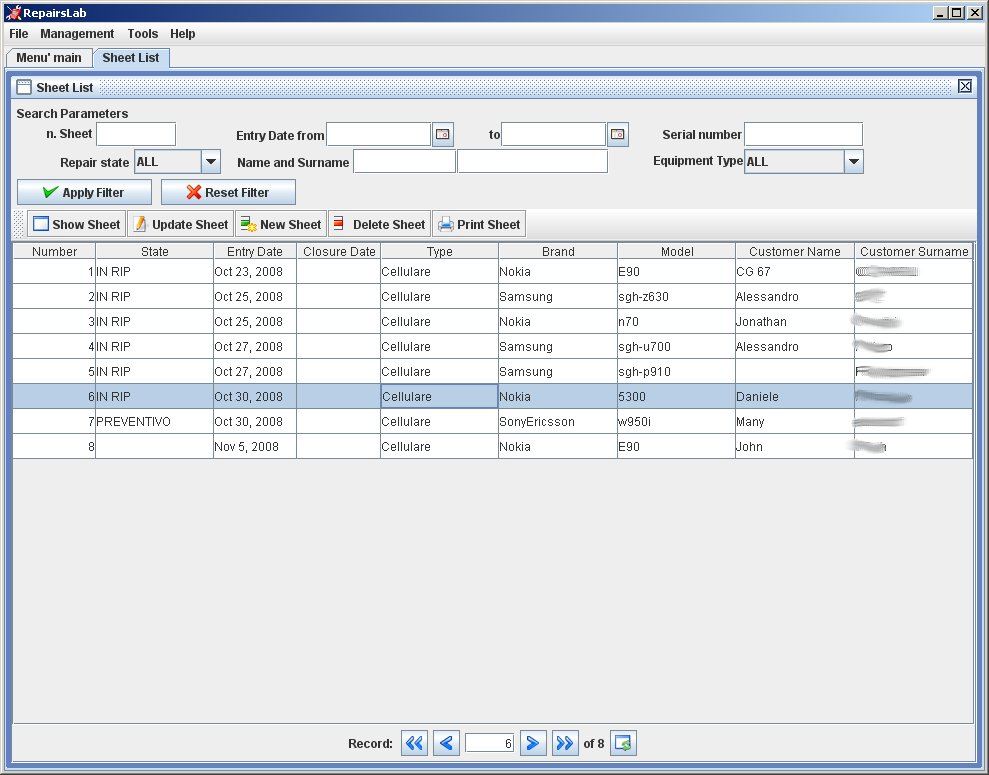
This
function is accessed from the Tools menu Trash Sheet and displays a
list of all the cancel repair sheet and allows the research of the
various cards present some criteria.
The features are: viewing
the details of the card, restoring sheet, disposal of the final tab
for the definitive elimination of all trash.
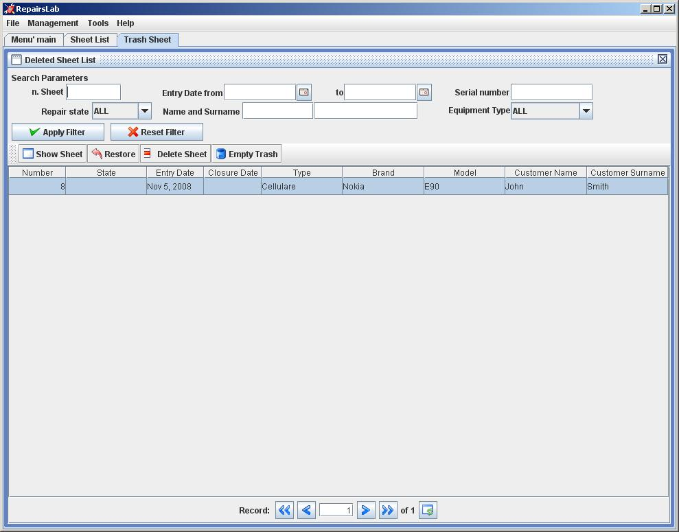
The function of
backup must be done manually by copying the directory containing the
data or db\derby\gestrip.
It is therefore advisable to store
regular archiving of that directory.
To restore data is simply
necessary to restore that directory.